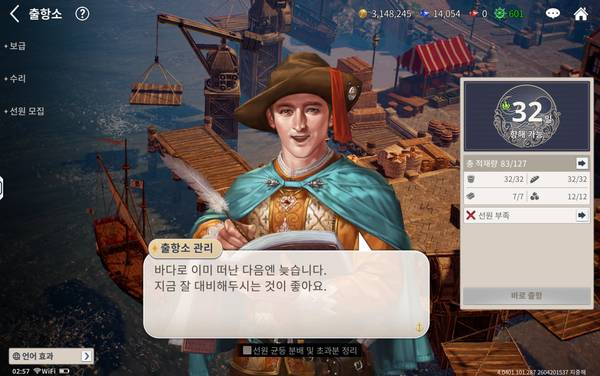
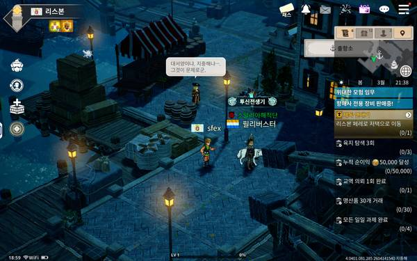
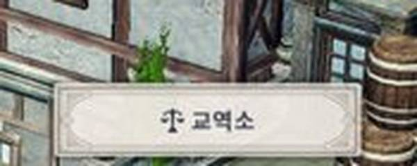
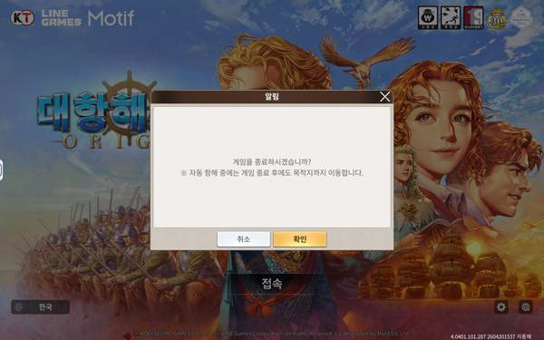

2026-05-06 16:00 ~ 03:00 UTC (KST 01:00~12:00) | 젬대버(Gemmaton) 프로젝트




출항소에서 Codex가 항상 "선원 모집"을 최우선으로 반환 → 보급/출항으로 넘어가지 못함
원인: 프롬프트에서 "선원 부족 시 항상 선원모집 최우선" → 출항소엔 항상 선원 모집 버튼이 있으므로 항상 선택됨
해결: 우선순위를 보급출항 > 보급 > 선원모집으로 변경
같은 영역 반복 감지 + 60초 대기 + 좌표 검증 >100 덕분에 보안정책 트리거 0회
모든 탭에 ✅변화/❌무변화 기록. 현재 109탭 중 대부분 ✅변화
auto_supply_done 플래그로 1회만 탭 후 자동 BACK. 정상 작동 확인
| 시간 | 변경 |
|---|---|
| Hour 4 | NPC 대화 읽기 + 침몰 시 리스본 회항 |
| Hour 5 | 보안정책 패턴 분석 + 같은 영역 반복 감지 |
| Hour 5 | NPC 제한 15→5회, 좌표 검증 >100 |
| Hour 6 | 탭 성공 여부 추적 (전/후 해시 비교) |
| Hour 6 | ADB pull 타임아웃 30→60초 + 3회 재시도 |
| Hour 7 | 선원 모집 최우선 → 보급/출항 최우선으로 변경 |
| Hour 8 | 보급→자동보급→BACK→출항소→NPC→보급 루프 정상화 |
항구 → 건물 → 출항소 → NPC(2-4회) → departure_office
→ 보급 → 자동보급(1회) → BACK → 출항소
→ NPC("선원 부족") → ... 반복
| 항목 | 값 |
|---|---|
| 총 탭 | 109 |
| 출항 성공 | 0 (이번 세션) |
| 항해 감지 | 0 |
| 보안정책 | 0 ✅ |
| NPC 닫기 | 53회 |
| 보급 성공 | 다수 (자동보급 정상) |